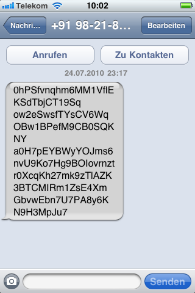

Artikel mit Tag Mobil
Sonntag, 25. Juli 2010
Seltsame SMS aus Vietnam und Indien
Seit gestern habe ich drei SMS aus Vietnam und Indien bekommen, deren Inhalt sehr nach kodierten Daten aussieht. Einen rechten Reim kann ich mir darauf allerdings nicht machen, etwas offensichtliches wie Base64-Encoding ist es nicht - Schadcode eventuell?

(SMS von +84980982541 - Vietnam)

(SMS von +919821882864 - Indien)

(SMS von +84980011608 - Vietnam)
"Seltsame SMS aus Vietnam und Indien" vollständig lesen
Donnerstag, 17. Dezember 2009
Muss man mögen

Diesen pinken Audi Q7 durfte ich eben in einer Münchner Parkgarage entdecken. Über Geschmack lässt sich bekanntermaßen nicht streiten.
Samstag, 7. Februar 2009
Faxeboom
iTunes synchronisiert Podcast-Status geräte-übergreifend
Aus der Kategorie Luxusprobleme: Falls ich mal laufen gehe - so wie eben heute - benutze ich dafür einen iPod Nano mit Nike+ Schrittzähler. In der übrigen Zeit leistet mir ein iPhone gute Dienste. Kann ich nun einen Podcast auf dem iPod beim Laufen hören und später den Rest-Podcast auf dem iPhone hören?

Die Antwort ist so einfach wie praktisch: Es funktioniert. Hören, Sync iPod Nano zu iTunes, Sync iTunes zu iPhone, Weiterhören.
Samstag, 17. Januar 2009
Blackberry? Zum Glück hab ich schon ein iPhone
Der Phonerator sagt, mein ideales Telefon wäre ein Blackberry:

Wie genau aus dem Namen das Telefon ermittelt wird ist unklar, bestimmt ist aber haufenweise Wissenschaft und Hexenwerk im Einsatz.
Suche
Aktuelle Einträge
So schön kann ein Schneesturm sein
Skype 5 Mac lesbar machen
Gute Frage
Seltsame SMS aus Vietnam und Indien
Workaround: Prototype 1.6.1 und X-JSON in Firefox
Was ich lieber hätte als einen Gratis-Bumper
Löschen reicht nicht, wir müssen auch sperren
Macbook Akkupflege
Google, das WLAN und das allgemeine Unverständnis